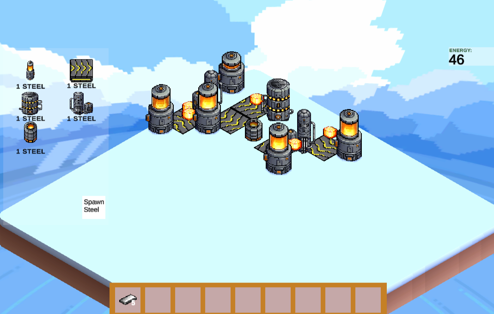

Fac-Two-ry
Fac-Two-ry was a small, "for fun", side-project I started just incase I ever wanted to make a factory game, or add something like that to a different project. Its was a project I used to see how organised I can be and how to get better at that, also modular I can make everything, the item and building data structures were set up so things can easily be added without needing to writing more code, which will be handy if i ever use this project to make a more serious factory project.
because its more of a learning project there is no tutorial, so here are the controls:
- click "spawn steel" to spawn steel, its the currency of the game
- clicking on any of the icons in the shop will add them to your inventory
- drag and drop to place buildings
- while dragging a building, right click to rotate
if its set up properly the buildings will generate steel (even if thats made redundant by the "spawn steel" button)
